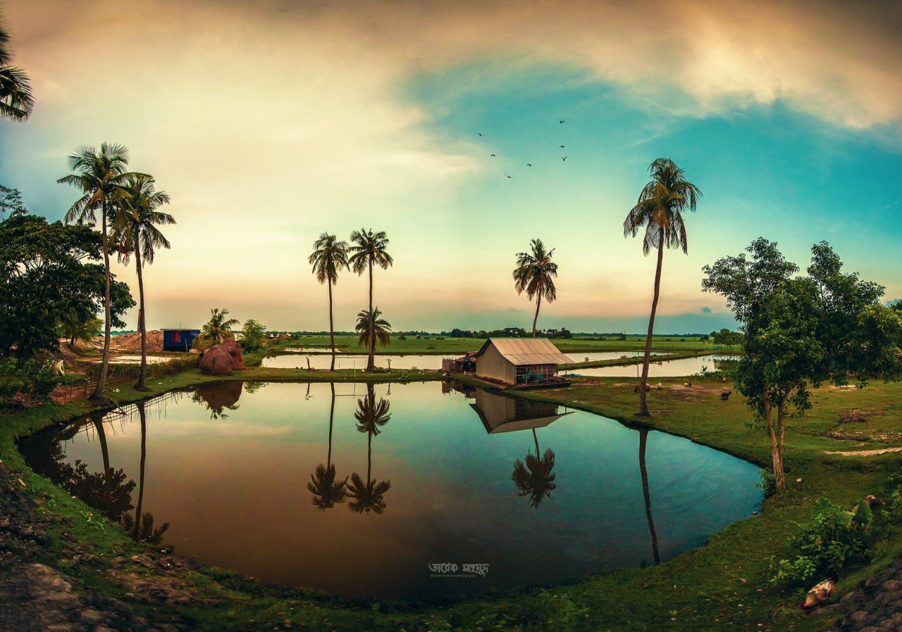

bangladesh
Bangladesh(BD) officially the People's Republic of Bangladesh, is a country in South Asia.
It is the eighth-most-populous country in the world,
with a population of around 169 million people in an area
of 148,460 square kilometres (57,320 sq mi).
Bangladesh is among the most densely populated countries in the world, and shares land borders with India to the west, north, and east, and Myanmar to the southeast; to the south it has a coastline along the Bay of Bengal. It is narrowly separated from Bhutan and Nepal by the Siliguri Corridor; and from China by the Indian state of Sikkim in the north. Dhaka, the capital and largest city, is the nation's political, financial and cultural centre. Chittagong, the second-largest city, is the busiest port on the Bay of Bengal. The official language is Bengali, one of the easternmost branches of the Indo-European language family.

Bangladesh forms the sovereign part of the historic and ethnolinguistic region of Bengal, which was divided
during the Partition of India in 1947.[17]
The country has a Bengali Muslim majority. Ancient Bengal was known
as Gangaridai and was a bastion of pre-Islamic kingdoms. Muslim conquests after 1204 heralded the sultanate and
Mughal periods, during which an independent Bengal Sultanate and a wealthy Mughal Bengal transformed the region
into an important centre of regional affairs, trade, and diplomacy. After 1757, Bengal's administrative
jurisdiction reached its greatest extent under the Bengal Presidency of the British Empire. The creation of
Eastern Bengal and Assam in 1905 set a precedent for the emergence of Bangladesh. In 1940, the first Prime
Minister of Bengal A. K. Fazlul Huq supported the Lahore Resolution. Before the partition of Bengal, a Bengali
sovereign state was first proposed by premier H. S. Suhrawardy. A referendum and the announcement of the
Radcliffe Line established the present-day territorial boundary of Bangladesh.
In 1947, East Bengal became the most populous province in the Dominion of Pakistan. It was renamed as East Pakistan, with Dhaka becoming the country's legislative capital. The Bengali Language Movement in 1952; the East Bengali legislative election, 1954; the 1958 Pakistani coup d'état; the six point movement of 1966; and the 1970 Pakistani general election resulted in the rise of Bengali nationalism and pro-democracy movements in East Pakistan. The refusal of the Pakistani military junta to transfer power to the Awami League led by Sheikh Mujibur Rahman led to the Bangladesh Liberation War in 1971, in which the Mukti Bahini aided by India waged a successful armed revolution. The conflict saw the 1971 Bangladesh genocide and the massacre of pro-independence Bengali civilians, including intellectuals. The new state of Bangladesh became the first constitutionally secular state in South Asia in 1972.[18] Islam was declared the state religion in 1988.In 2010, the Bangladesh Supreme Court reaffirmed secular principles in the constitution.[22]